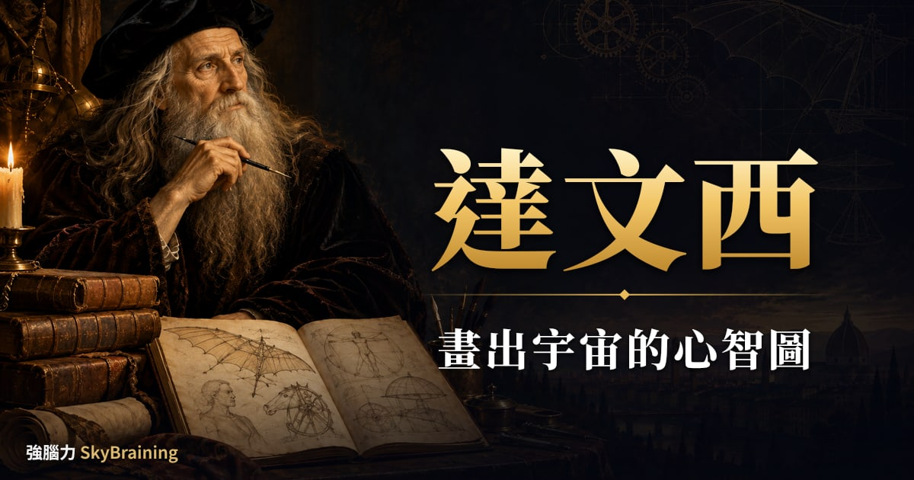
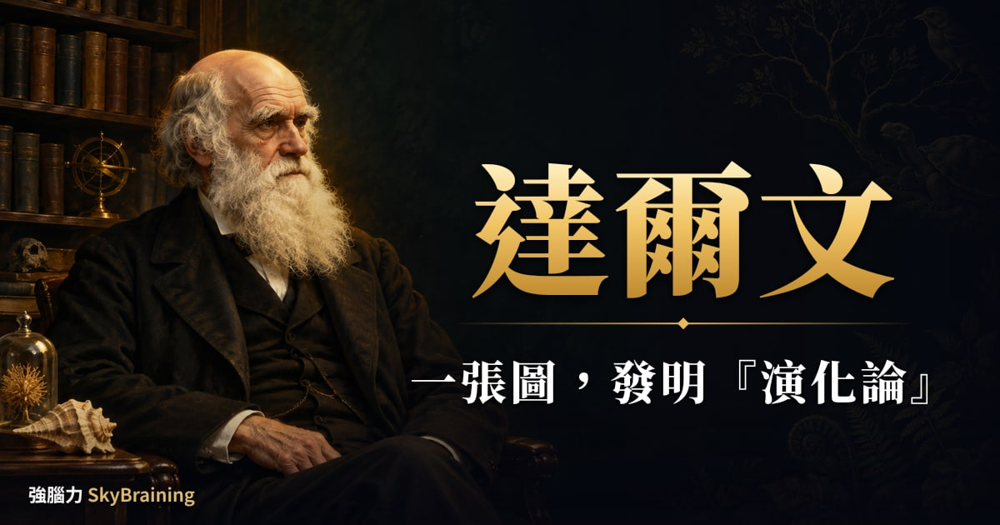
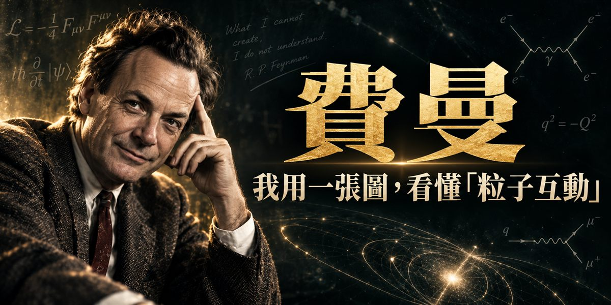
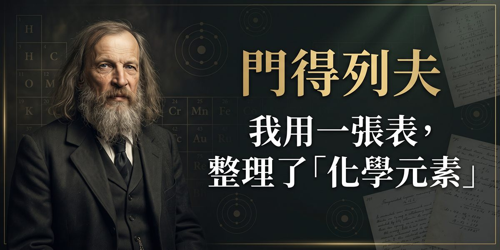
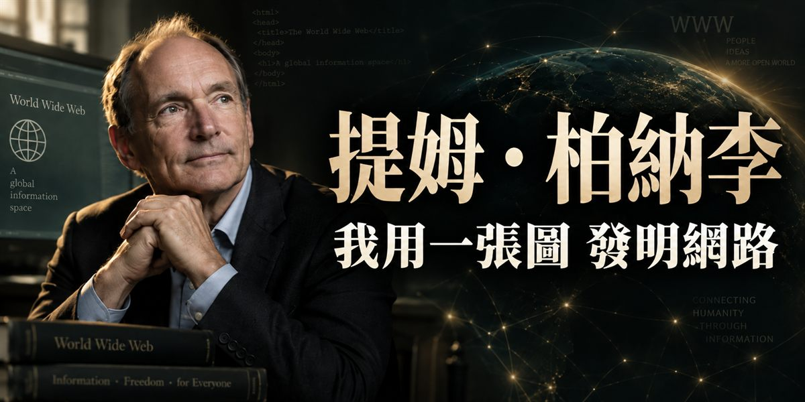
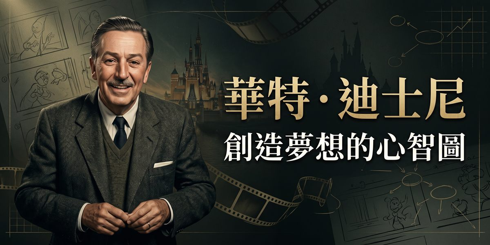
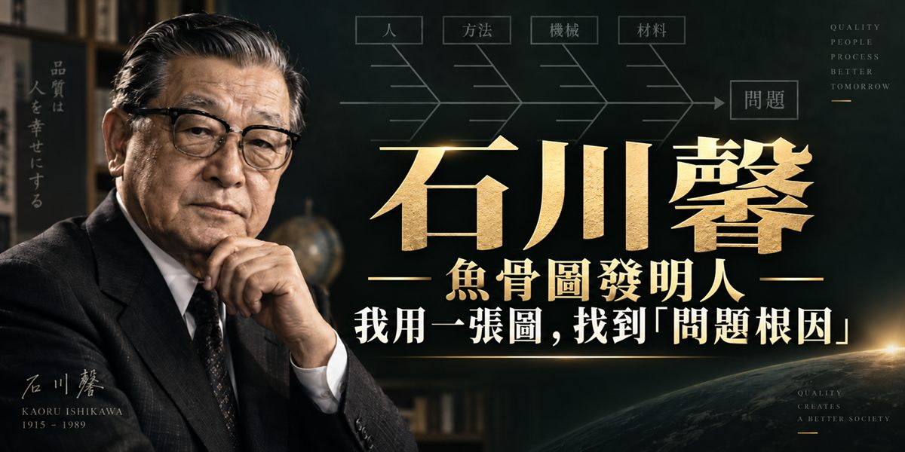
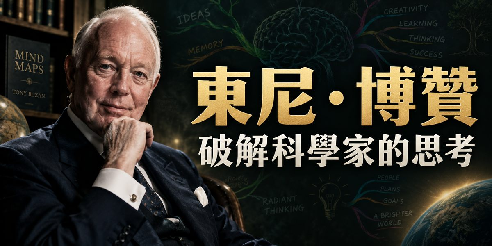
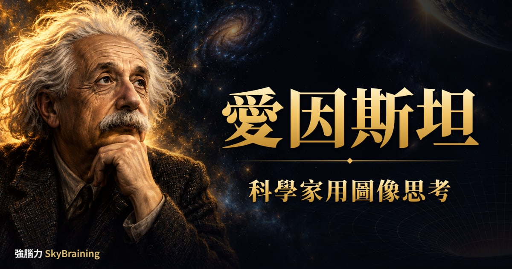
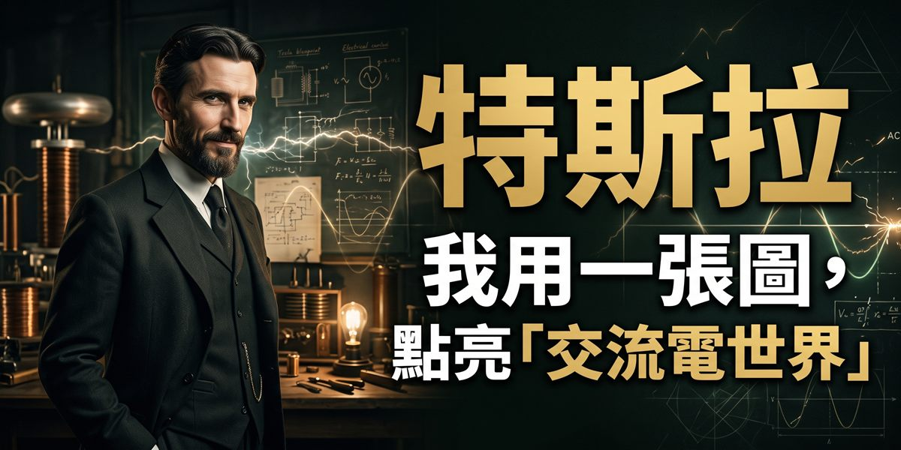

01你知道心智圖是什麼嗎？
簡單說，心智圖（Mind Map）是一種放射狀的筆記與思考方式：你把主題寫在紙的正中央，往外拉出分支，每條分支只放一個關鍵字，再用顏色和小圖把它們區分開來。
你可能會問：這跟條列式筆記差在哪？差別不在外觀，在誰在動腦。條列式筆記，你可以邊發呆邊抄；心智圖不行——你必須先決定「這件事的骨架是什麼」「這一條要掛在哪裡」，才畫得下去。你做決定的那一刻，就是學習真正發生的地方。
02五個步驟，畫出你的第一張
照這五步，你十五分鐘畫完一張
- 紙橫放，正中央寫下主題（一個詞，不是一句話），旁邊畫一個代表它的小圖。
- 往外拉 3～7 條主幹，每條寫一個關鍵字，那是這個主題的大分類。
- 主幹再往外長細枝，一邊問自己「這讓我想到什麼？」——用聯想，不要抄書。
- 一條主幹一個顏色，重點節點加一個三秒畫完的小圖，給記憶掛鉤子。
- 闔上課本，憑記憶重畫一次。畫不出來的地方，就是你其實沒記住的地方。
你別跳過第五步：九成的人會漏，它最值錢。完整版（含三個最常見的錯誤）在這裡：心智圖怎麼畫？5 步驟完整教學 →
03為什麼對你有效：三個機制
雙重編碼理論（Dual-coding Theory，Paivio, 1971）：你的大腦處理文字和處理圖像，走的是兩套系統。同一個概念，你寫成字、也畫成圖，等於存了兩份備份，想起任何一份，都能把另一份拉出來。
組塊（Chunking，Miller, 1956）：你的工作記憶一次只裝得下少少幾樣東西。把二十個細節收進五個上位分類，記憶負擔就從二十掉到五——心智圖的主幹，做的就是這件事。
生成效應與提取練習：你自己想出來的連結，比讀來的連結牢得多；而記憶不是「放進去」時變強，是「拿出來」時變強。這也是為什麼抄別人的心智圖幾乎沒有效果——你省掉的，正是最有價值的那部分。
04大師的那張圖，你看過嗎？
你可能以為心智圖是新東西？名字確實很新，但「把想法攤在一張紙上、用線把它們連起來」這件事，人類做了幾百年。這個系列挑了十位留下實體證據的人，帶你看看他們那張圖長什麼樣、為什麼管用。
說明：以下每一篇都建立在真實存在、可查證的手稿或圖表上，沒有虛構引言。除了博贊那一篇之外，其餘人物都生在「心智圖」一詞出現之前，每篇文末都有一段話清楚說明這件事。

達文西的手稿把圖和字放在同一頁。那不是塗鴉，是一種思考方式。

1837 年那棵潦草的樹，後來變成了演化論。分支，是一種思考方式。

幾條線、幾個點，取代整頁算式。費曼圖是「把抽象變成圖」最徹底的一次勝利。

把全部攤開、反覆排列，然後在空白處留下預言。這是週期表誕生的方式。

1989 年那張泡泡加箭頭的手繪圖，後來變成了全球資訊網。

把整個故事釘上牆，一眼看完。分鏡板解決的問題，跟你讀書一模一樣。

一根主骨，幾根大刺，往下再長小刺。把「為什麼」拆到看得見為止。

心智圖的名字來自 1974 年的東尼·博贊。但放射狀的圖，古人早就在畫。

愛因斯坦回覆問卷說：他思考時出現的不是文字，是畫面。

特斯拉說他在腦中組裝機器、讓它運轉。心像力，你也可以練。
05你可能想問
心智圖是什麼？
心智圖（Mind Map）是一種把想法畫成放射狀網絡的筆記方式：你在中央寫下主題，往外拉出分支，每條分支只寫一個關鍵字，再搭配顏色和小圖。重點不是「圖好不好看」，而是畫的過程逼你把資訊拆解、分類、連結——真正在變強的是你的大腦，圖只是副產品。
心智圖是誰發明的？
「心智圖」這個名稱由英國作家東尼·博贊（Tony Buzan）在 1970 年代提出並推廣，1974 年的 BBC 節目與《Use Your Head》一書讓它廣為人知。但你知道嗎？博贊自己也說過，這個做法的源頭可以往前追到古希臘的 Porphyry 樹狀圖與 13 世紀的 Ramon Llull——他做的是把一套零散的視覺整理傳統，變成人人可學的四條規則。
心智圖怎麼畫？
你照這五步走：紙橫放、中央寫一個關鍵詞並加一個小圖；往外拉 3～7 條主幹，每條寫一個關鍵詞；主幹再往外長細枝，用聯想不用抄書；一條主幹一個顏色、重點節點加小圖；最後闔上課本憑記憶重畫一次。第五步最多人漏掉，卻是效果最大的一步。
心智圖真的有用嗎？有科學根據嗎？
你會懷疑很正常。有幾個成熟的認知心理學機制支持它：雙重編碼理論（Paivio, 1971）指出文字與圖像走兩套系統，同時編碼等於存兩份備份；組塊（Miller, 1956）解釋了為什麼把細節收進上位分類會讓記憶負擔下降；生成效應與提取練習則說明「自己想出來、自己重畫一次」比反覆閱讀有效。但我要提醒你：心智圖有效的前提是你自己畫，抄別人的圖幾乎沒有效果。
我家孩子幾歲適合學心智圖？
你家孩子只要會寫字、能講出「這讓我想到什麼」，就可以開始，通常小學中年級是很自然的起點。還在低年級的話，你可以陪他先玩純圖像版本——中間畫一個東西，往外畫出相關的東西，不寫字也沒關係。重點是先養成「往外聯想」的習慣，格式可以慢慢補。
心智圖可以用在哪些地方？
比你想的還多：課文複習、英文單字分類、作文審題與擬大綱、專題報告的架構、讀書計畫，甚至你開會前整理想法都可以。強腦力最常帶學員練的兩個場景是「一課課文畫成一張圖」和「看到作文題目十分鐘內拉出骨架」——前者練記憶，後者練思考。
06心智圖教學，你先讀這幾篇
07其他學習方法，你也可以試
心智圖不是你唯一的工具。記憶、專注、複習節奏各有各的做法，這幾篇也都寫好了，你挑需要的讀：
08在高雄，想上實體的心智圖課？
強腦力的實體小班課就開在高雄：初階先帶你把記憶方法與複習節奏建立起來，進階把記憶與心智圖整合成考場上的實戰力。從雄女、左營高中到楠梓國中，我們的街頭實戰影片都在高雄的校園與街頭完成——方法有沒有用，當場看得見。